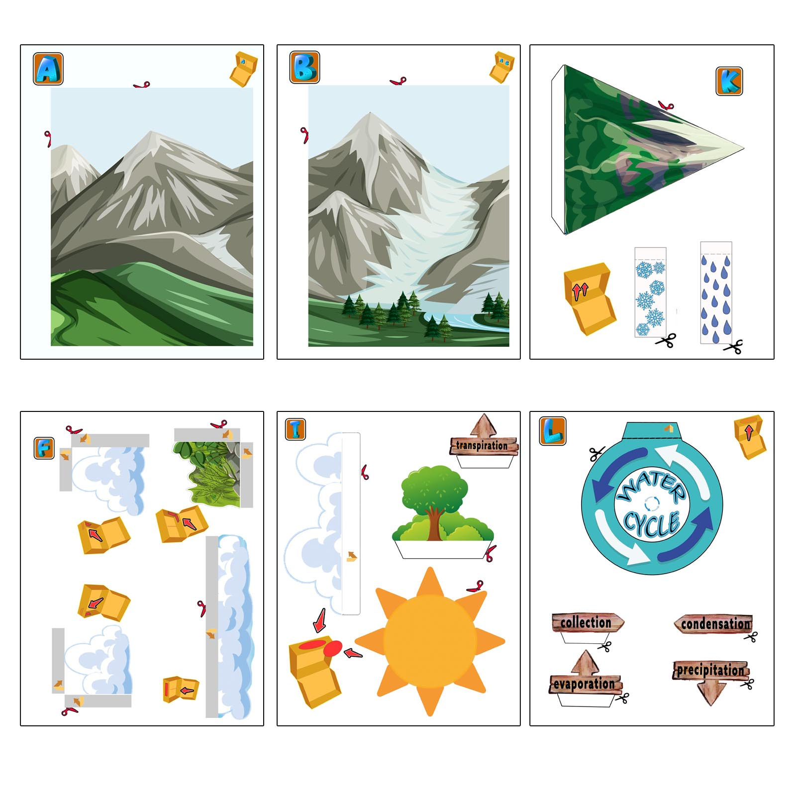
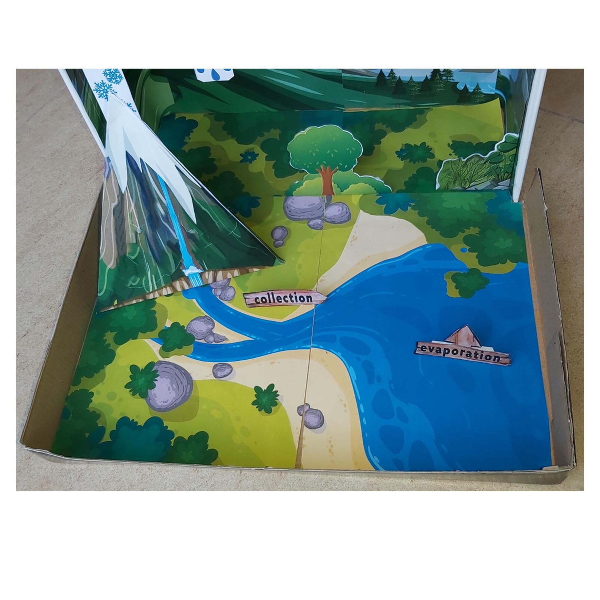
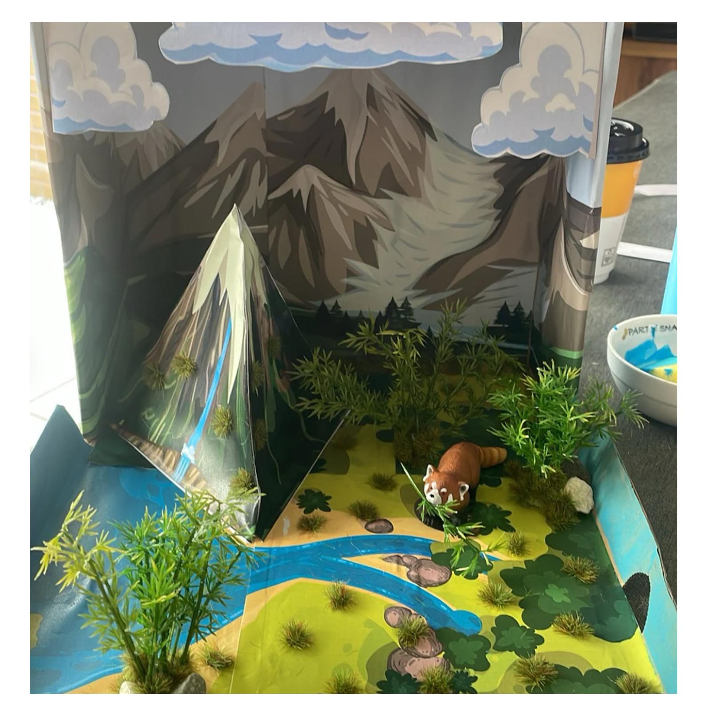
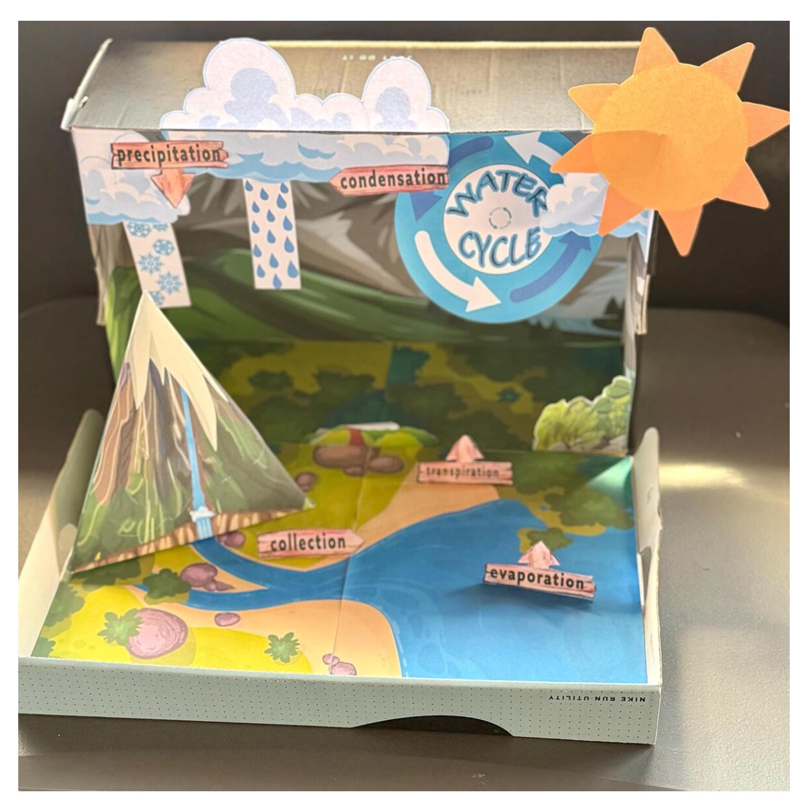

Water Cycle Project for Kids
Build the water cycle instead of only drawing it. This printable project turns evaporation, condensation, precipitation, collection and transpiration into a colorful 3D model students can explain and present.
A practical starting point for science assignments, classroom activities and school projects in the Philippines.
See the Project
Printable 3D Water Cycle Science Model
This 12-page printable set provides the illustrated scenery, water cycle labels and 3D parts needed to create the model. Students print, cut and glue the pieces, then use the finished project to show how water moves through the environment.
What You Print and Build
The PDF combines large scenery pieces with smaller cut-and-glue elements, so the final school project has real depth rather than looking like a flat worksheet.




Print, Cut, Build & Learn
The printable provides the starting structure while the student still does the hands-on work.
See How Students Made It Their Own
The printable can be the starting point rather than the end of the project. Students can add their own plants, craft materials, figures and details to create a more personal science display.



Get the Printable Water Cycle Project
The Water Cycle project contains 12 printable pages and is supplied as a digital PDF for printing at home or school.
One-time purchase · Secure checkout by Paddle · Instant digital download
Your Water Cycle PDF is ready
Thank you for your purchase. Use the button below to download your printable project.
Download PDF